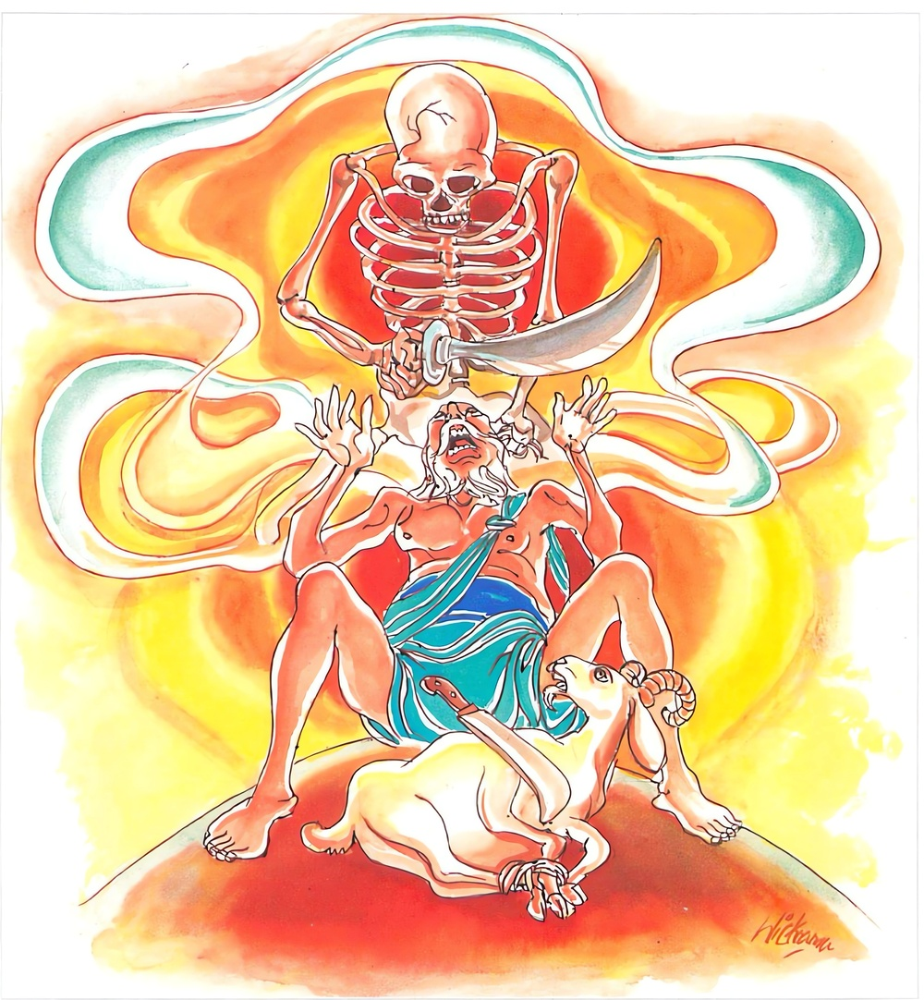

10-1 සවග මහණුන් කළ හිංසාවක්
මෙම කතාව ධම්මපද අටුවාවෙන් ද කියවන්න.
සබ්බෙ තසන්ති දණ්ඩස්ස සබ්බෙ භායන්ති මච්චුනො
අත්තානං උපමං කත්වා න හනෙය්ය න ඝාතයෙ.
(කේශර සිංහයන් හා ආජානේය හස්ත්යශ්වයන් හා ක්ෂීණාස්රවයන් තබා සෙසු) සියලු සත්ත්වයෝ ම (වධබන්ධනාදි) කායදණ්ඩනයට ත්රස්ත වෙති. (ක්ෂිණාස්රවයන් තබා සෙසු) සියලු සත්හු ම මරණයට බති. ක්ෂීණාස්රවයෝ වනාහි ජීවිතයෙහි ද මරණයෙහි ද උපේක්ෂක ම වෙත්. එබැවින් තමා උපමා කොට (හෙවත් මම් යම් සේ දණ්ඩනයට බම් ද එසේ ම සියලු සත්ත්වයෝ ද දණ්ඩනයට බති. මගේ ජීවිතය මට යම්සේ ප්රිය ද එසේ ම සියලු සතුන්ගේ ජීවිත ද ඔවුනට ප්රිය යැ’ යි මෙසේ) තමා උපමා කොට (නුවණැති පුරුෂ තෙම) කිසි දු සතක්හු (අතින් පයින් දංඩෙන් සැතින්) නො මරන්නේ ය. අනුන් ලවා ද නො මරවන්නේ ය.

එදා අප බුදුරජුන් දවස සතළොස් වග නමින් හඳුන්වනු ලැබූ මහණෝ, දවසෙක තමන්ට සැතපෙන්නට සෙනසුන් පිළියෙල කරන්නට වූහ. ඒ වේලෙහි සවග මහණෝ “අපි ඔය ඇත්තනට වඩා වැඩිමහලු වම්හ, ඔය පිළියෙල කළ සෙනසුන් අපට ලැබිය යුතු ය” යි අරගල කළහ. එකල සතළොස් වග මහණෝ “ඔය ඇත්තන් වැඩිමහලු බව සැබෑ ය, එයින් අපට ඇති කාරිය කිම, මේ සෙනසුන් හැමට පළමු අප විසින් පිළියෙල කර ගන්නා ලද්දේ ය, ඒ නිසා මොන ලෙසකිනුත් මේ සෙනසුන් කාටත් නො දෙමු” යි දරදඬු වූහ. එයින් කිපුනු සවග මහණෝ සතළොස් වග මහණුන්ට අතින් පයින් දණ්ඩෙන් පහර දුන්හ. බුදුරජානන් වහන්සේ මේ අරගලය අසා “යම් මහණෙක් අන් මහණකුහට පහර දේ නම් ඔහු වරදෙහි බැඳෙන්නේ ය යි යො පන භික්ඛු භික්ඛුස්ස කුපිතො අනත්තමනො පහාරං, දදෙය්ය පාචිත්තියං” යි මේ ප්රහාරදාන ශික්ෂා පදය පණවා, “මහණෙනි! මහණහු විසින් මම, යම් සේ නම් අන්හුත් එසේ ම දණ්ඩනයට බිය ඇත්තෝ වෙති, මරණයට තැති ගණිති, යි සලකා අන්යයාට පහර නොදිය යුතු ය, අන්හු නො නැසිය යුතු ය” යි අනුසන්ධි ගළපා මේ ධර්මදේශනාව කළ සේක.
සබ්බෙ තසන්ති දණ්ඩස්ස සබ්බෙ භායන්ති මච්චුනො,
අත්තානං උපමං කත්වා න හනෙය්ය න ඝාතයෙති.
සියලු දෙන දණ්ඩනයෙන් තැති ගණිත්. සියලු දෙන මරණයට බිය ඇත්තෝ වෙත්. තමා උපමා කොට (අනෙකකු) නො මරන්නේ නො මරවන්නේ ය.
සබ්බෙ තසන්ති දණ්ඩස්ස = සියලු දෙන දණ්ඩනයෙන් තැති ගණිත්.
මෙහි සබ්බ ශබ්දය සාවශේෂාර්ත්ථයෙහි හෙන්නේ ය. “සියලු දෙන දණ්ඩනයෙන් තැති ගණිති, මරණයෙන් බියපත් වෙති” යි වෙනසක් නො කොට වදාළ නමුදු, සබ්බ ශබ්දය සාවශේෂාර්ත්ථ බැවින් කේශරසිංහ, අජානේය හස්ති අශ්ව වෘෂභ, ක්ෂීණාස්රව යන මොවුන් හැර අන්යයෝ ම තැති ගණිත්, බියපත් වෙති යි, දතයුතු ය. මෙහි කියූ කෙශරසිංහාදීහු දණ්ඩනයෙන් මරණයෙන් තැති නො ගණිත්. බියපත් නොවෙත්. ඒ බව සාවශේෂාර්ත්ථ සබ්බ ශබ්දය යොදාලීමෙන් දක්වා වදාළ සේක. බුදුරජානන් වහන්සේ.
“ඉමිස්සා ච දෙසනාය ව්යඤ්ජනං නිරවසෙසං, අත්ථො පන සාවසෙසො. යථා හි රඤ්ඤා සබ්බෙ සන්නිපතන්තූති භෙරිය වාරාපිතායපි රාජමහාමතෙ ඨපෙත්වා සෙසා සනිපතන්ති එවමෙව ‘සබ්බෙ තසන්තී’ ති වුත්තෙ පී හත්ථාජානෙය්යො අසාජාජානෙය්යො උසහාජානෙය්යො බීණාසවොති ඉමෙ චත්තාරො ඨපෙත්වා අවසෙසාව තසන්තීති වෙදිතබ්බා” යනු අටුවා ය. රජු විසින් “සියලු දෙන රැස් වෙත්වා” යි අණ කළ විට රජ මහ ඇමැතියන් හැර, අනික් දෙන රැස් වෙති. එමෙන් “සියලු දෙන තැති ගණිත්” යි කී විට තැති ගන්නෝ හස්ත්යාජානෙය්යොදීන් හැර අන්යයෝය හස්ත්යාජානෙය්යොදී වූ සිවු දෙන තැති නො ගණිත්. සාවශේෂවාචකැ යි කියනුයේ යමක් කියන කල්හි කොටසක් හැර කීම ය.
සබ්බ ශබ්දය කිසිවක් ඉතිරි නො කොට ද කියන්නේ ය. “සබ්බං රූපං සබ්බා වෙදනා සබ්බසක්කාය පරියාපන්නේසු ධම්මේසු” යනු නිදසුන් ය.
‘සබ්බං රූපං’ යනාදි පාලියෙහි ආ සබ්බ ශබ්දයෙන් රූප වේදනාදීහු ඉතිරි නො කොට ගැණෙති. එය සප්පදේස - නිප්පදේස විසයභාවයෙන් දෙ පරිදි ය. සබ්බසබ්බ - පදේසසබ්බ - ආයතනසබ්බ - සක්කායසබ්බ යන චතුර්විධවිෂයයන්හි දක්නා ලබන ප්රයෝග ඇති බැවින් එසේ වන්නේ ය.
‘සබ්බෙ ධම්මා සබ්බාකාරෙන බුද්ධස්ස භගවතො ඤාණමුඛෙ ආපාථමාගච්ඡන්ති’ යනාදි තැන්හි සබ්බසබ්බයෙහි ආයේය.
‘සබ්බසං වො සාරිපුත්ත! සුභාසිතං පරියායෙන’ යනාදි තැන්හි පදේසසබ්බයෙහි ආයේ ය.
‘සබ්බං වො භික්ඛවෙ! දෙසිස්සාමි චක්ඛුඤ්චෙව රූපං ච -පෙ- මනඤ්චෙව ධම්මෙ ච’ යනාදි තැන්හි ආයතනසබ්බයෙහි ආයේ ය.
‘සබ්බධම්මමූලපරියායං වො භික්ඛවෙ! දෙසිස්සාමි’ යනාදි තැන්හි සක්කායසබ්බයෙහි ආයේ ය.
තමන් කියන පදරුත්, කිසිවකුත් ඉතිරි නො කොට කීම, ගැණීම නිල්පදේස නම්. හැම පදාර්ත්ථ කෙනෙක් හැම අයුරකින් ම මදකුත් නො හැර බුදුරජුන්ගේ නුවණට ගොදුරු වෙති යනු එහි අදහසය. අන් තුන් තැන්හි වූ සබ්බ ශබ්දය සප්පදේස විසයක වේ.
දණ්ඩස්ස යනු පංචම්යර්ත්ථපථයෙහි ෂෂ්ඨි ය. දණ්ඩනයෙන් යි අරුත් කියනුයේ එහෙයිනි. ජාත්යාදීන් ගැටීම් වශයෙන් පවත්නා වාග්දණ්ඩ, අත් පා දඬු මුගුරු ආදියෙන් පහර දීම් වශයෙන් පවත්නා කායදණ්ඩ, සියය දහසය යනාදී වශයෙන් තැබීමෙන් කරන්නා වූ ධනදණ්ඩ, යන මේ ය මෙලොව පවත්නා දණ්ඩන.
ඇණුම්, බැණුම්, තැළුම්, පැහැර ගැණුම්, මැරුම් යනාදිය හා එයට සාධන වූ මුඛ, හස්ත, පාද, දණ්ඩ, මුද්ගර, ශස්ත්ර යනාදියත් දණ්ඩ ශබ්දයෙහි ඇතුළත් ය. ‘දණ්ඩනං = දණ්ඩො, දණ්ඩන්ති පහරන්ති එතෙනාති = දණාඩො’ යනු අර්ත්ථසමර්ත්ථන ය යි. මේ දණ්ඩය තෙ පරිදි ය. වධ - අනුග්ගහණ - පරික්ලෙස යි.
“වධොනුග්ගහණං චෙව පරික්ලෙසො තථෙව ච,
ඉති දණ්ඩ විධිඤ්ඤූහි දණ්ඩාපි තිවිධො මතො”
යනු ටීකා ය.
දැමීම ද ‘දණ්ඩ’ යි කියත්. ‘දමන්ත්යනෙනාති = දණ්ඩො’ යනු.
සාමාදි උපායයන් අතුරෙහි එන සිවුවන උපායය ද ‘දණ්ඩ’ යි හඳුන්වනු ලැබේ. පද්මනාලයටත් දණ්ඩ යි නමෙකි. කාය වාඞ්මනෝදුශ්චරිත තුණ ද දණ්ඩ යි ආයේ ය. ‘කායදණ්ඩොති කායදුච්චරිතං වචීදණ්ඩාදිසුපි එසොව නයො’ යනු අටුවායි. මෙහි ආයේ වධබන්ධනාදී දණ්ඩනැ යි දත යුතු ය.
සබ්බෙ භායන්ති මච්චුනො = සියලු දෙන මරණයට බිය වෙත්,
රහතුන් වහන්සේ පැහූ සත්කායදෘෂ්ටිය ඇති බැවින් නාම රූපධර්මයන්ගේ බිඳීම හැර අන් මියන සතකු නො දක්නාහු මරණයට බිය නො වන්නෝ වෙති. කේශරසිංහාදීහු සත්කාය දෘෂ්ටිය බලවත් බැවින් තමුන්ට ප්රතිපක්ෂ සත්ත්වයකු නොදක්නෝ අහඞ්කාරපරවශ ව මරණයෙහි බිය ඇත්තෝ නො වෙති. ‘ඉමෙ සු හි ඛීණාසවො සක්කායදිට්ඨියා පහීණත්තා මරණකසත්තං න පස්සන්තො න භායති. ඉතරෙ තයො සක්කායදිට්ඨියා බලවත්තා අත්තනො පටිපක්ඛභූතං සත්තං අපස්සන්තා න භායන්ති’ යනු අටුවා ය.
මච්චුනො යනු පංචම්යර්ත්ථයෙහි ෂෂ්ඨි ය. මරණයෙනැ යි කියනුයේ එහෙයිනි. මච්චු යනු මරණයට නමෙකි. ‘ මච්චු මරණං’ යනු සාධකය.
අත්තානං උපමං කත්වා න හනෙය්ය න ඝාතයෙ = තමා උපමා කොට නො මරන්නේ ය. නොමරවන්නේ ය.
තමා උපමා කොට අන් සතකු නො නසන්නේ ය, නො නස්වන්නේ ය, යනු වදාළෝ, “මම යම්සේ දඬුවමට මරණයට බියපත් වෙම් නම්, අන්යයා ද දඬුවමට මරණයට එසේ බිය පත් වන්නේය” යනු සිතන්නහුට “අත් පා දඬු මුගුරු සැත් ආදී යමකින් අන්හට හිංසා නො කට යුතු ය, අනුන් ලවාත් හිංසා නො කර විය යුතු ය” යනු සිතට නැග එන බව දක්වනු සඳහා ය. “අන්යයා ද තමා මෙනැ” යි සිතන්නහුට අනුන් තළා පෙළා ගසා කෑමෙහි නපුරු අදහස් පහළ නො වන්නේ ය.
ධර්මදේශනාවගේ අවසානයෙහි බොහෝ දෙන සෝවාන් ඵලාදියට පැමිණියාහු ය.
ෂඩ්වර්ගීයභික්ෂු වස්තුව නිමි.